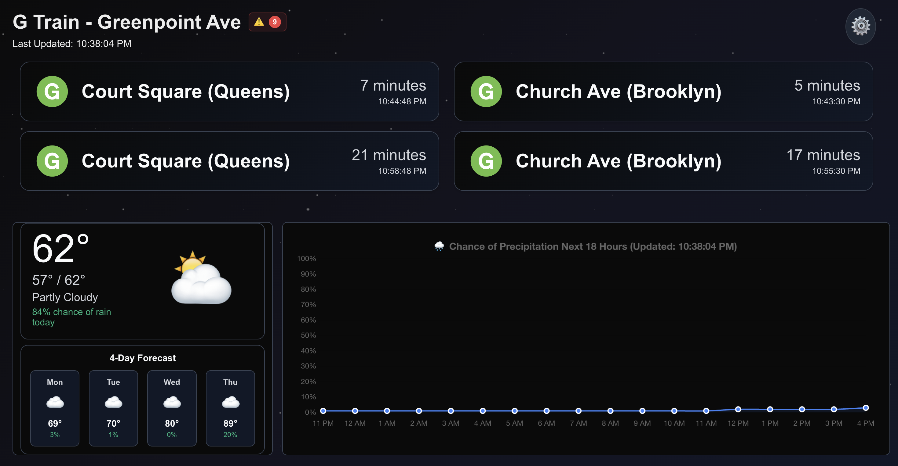
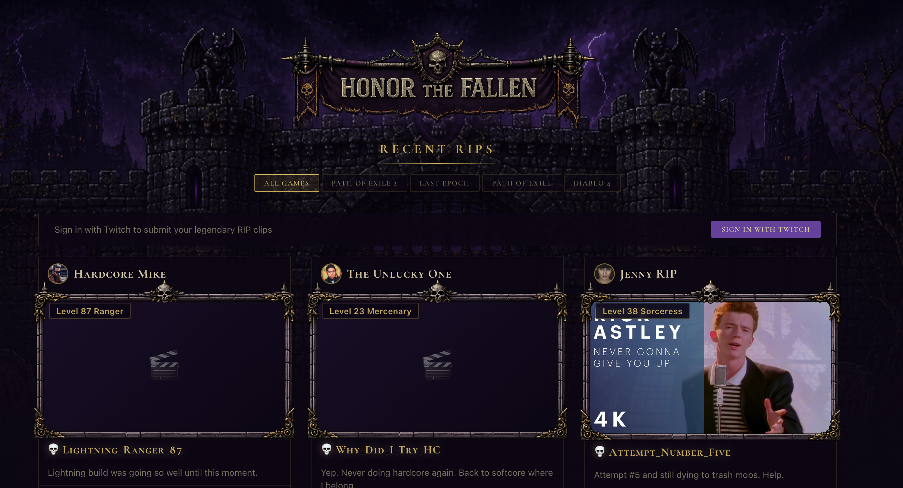
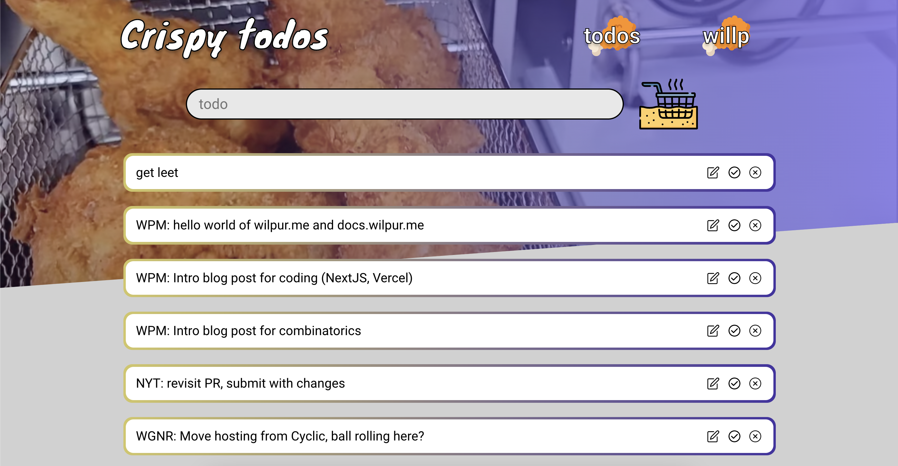
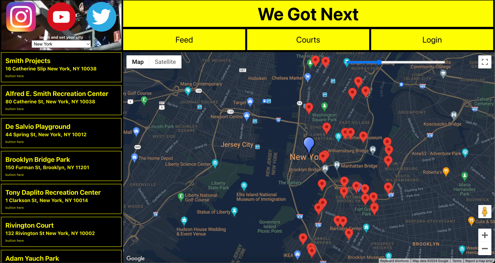
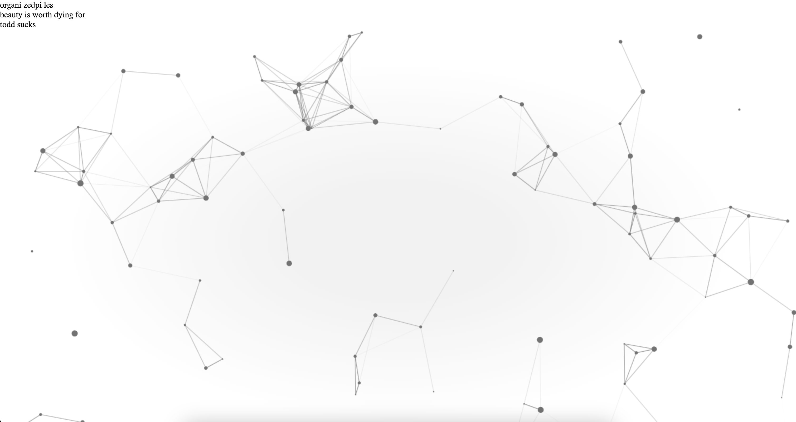

"An app is never completed, only abandoned."
Welcome! Please feel free to check out my current projects:
NYC Companion

When I moved from the East Village to Greenpoint, I became beholden to the G train. It's a good train but it's not always the most reliable, and it can be unpredictable. At times it runs every 4-6 minutes, others it can be up to 15 minutes or more between trains.
I wanted to create an app designed to display permanently on a monitor or tablet showing subway arrival times for my apartment. That way, I can easily see the next train and figure out when makes sense to leave to catch it in a timely manner. And by keeping the weather handy, I can easily figure out what makes sense to wear and whether to prepare for rain or snow. It's also nice to have a cool decorative screen featuring an app that I built.
Ask me about my hacked Amazon Kindle Fire that I use as a display, and the optimizations I've made to the web app to make it run smoothly and efficiently on mobile. I use this app all the time. I added all stops on the G train and L train so my friends can use it too.
technology
React, NextJS, CSS Modules
MTA GTFS-RT realtime API for G/L arrivals and service alerts
Chart.js
Open-Meteo API for weather
learnings
Exploring the MTA GTFS-RT realtime API and learning how to parse the data was interesting. For example the API uses a protobuf format to keep data small and efficient, so I had to decode the data.
Using the Chart.js library was a great way to visualize the data in a clear and concise way. I'd never used the library before and it was fun to explore and to make visualizations.
OpenMeteo API was a great way to get the weather data I needed. I'm really happy with the results, and after experimenting with several open source options, this one best met my needs.
RIP Life

I am a big fan of the action rpg genre in video games, and I thought it would be fun to contribute to the community. This app tracks high profile gaming moments of popular Twitch streamers and content creators in games like Diablo and Path of Exile.
Characters only get one life in these video games and when they die in game, especially during a stream, it is a whole event. This app collects those moments and lets people pay tribute, and have a little fun, while voting for characters who they think are the most honorable and valiant warriors.
There is a home page showing recent RIP clips, sorting, searching and filtering, as well as a page for each user's honor history, character graveyard, and recent RIP clips. There are also leaderboards by leagues, or periodic resets to the game ladder, allowing for new competition and new opportunities to rise to the top.
The app is still in development, but I'm happy to show progress so far. Next steps include an arpg news feed and a payment system to support the app and its community.
technology
React, NextJS, CSS Modules, NextAuth
Supabase / PostgreSQL
Web Animations API
Vitest
learnings
This was my first time implementing CSS Modules alongside React, and it's a great way to stay organized, keep styles scoped, and avoid global CSS conflicts.
I'm also really happy with the Web Animations API and how it can be used to create interactive and engaging animations.
Vitest is a great testing framework and it was great learning the ropes of using it to test my code.
I used Supabase and PostgreSQL to store my data. It's a great database for this project and data design is something I'm really interested in.
Crispy Todos

While studying independently I struggled to keep track of things to work on and staying organized. Tools like Notion and Trello felt like overkill for my small personal projects.
Then it hit me, why not take my bare-bones todo app collecting dust and iterate on it? That way I could build my own features and functionality for fun while getting use out of them. I also realized that with some work it could actually be a helpful tool, and a good sandbox to hack on ideas that come to mind and learn more React.
Feel free to log in and use it for basic tasks. The fried chicken theme is just based on the fact I used a random name generator for the repo, which was "crispy-octo," so I just ran with the crispy concept.
technology
React, Express, Mongoose, NodeJS
User auth implementation (JWT, bcrypt)
learnings
Built the auth system myself because I wanted to learn JWT and bcrypt
Using Schema objects more robustly and handling back-end functionality there instead of in a Controller
Implemented my own drag functionality instead of using a library such as react-draggable
First time translating my own design from Figma into HTML/CSS -- super fun learning experience
Working in localStorage and user Controller to manage unauthed/anonymous state versus logged-in state, and correctly handling data during authorization process
We Got Next

My friend Gio, who is an avid basketball player and content creator, approached me with the idea of We Got Next and the ideas started flowing.
What if there was an easy way to find a basketball court where people are playing? What if someone could check out information on local courts and connect with players in their area?
All we had was a giant spreadsheet of information about basketball courts. I've had a lot of fun getting this far and I'm excited for the possibilities of what's to come.
Ask me about the mobile app -- the desktop app shares all of the same functionality, but we feel this one will eventually be mobile-first.
technology
React, React Native (mobile app), Express, Mongoose, NodeJS
User auth implementation (JWT, jose)
Google Maps API
learnings
Implementing the Google Maps API and its appropriate Marker functionality along with building an interactive map
React Native, and translating the web app to mobile. Too much to cover here but a lot to do with React Native components, app structure, React Native CSS, and so-on
This was my first implementation of Mongoose/Express/NodeJS and the MVC model more generally
I tripped over, and redesigned, the Courts data Schema so many times that I ended up spending a fair amount of time in the Mongo Shell
Organized Piles

Visual artists such as Rafael Rozendaal serve as a continuous source of inspiration. Call it a monkey-see-monkey-do situation but I decided to start hacking around with visual design in the browser, particularly interactive or animated design.
So far I've only really delved into some basics involving HTML Canvas alongside vanilla JavaScript, and implementing some math. In the future I'd like to get involved with some Three JS which is interesting technology, and other comparable visual libraries.
technology
JavaScript, HTML Canvas
Math
learnings
HTML Canvas is actually pretty darn powerful
I now realize how much math goes into designing anything animated or interactive in the browser
There are a lot of ways to crash the browser by overwhelming it with information from mouse listeners, and those listeners interacting with surrounding objects
Using Github Pages to host, which then turned into a crash-course in DNS and how the internet works